2022
HOUSE OF CARDS
A shape grammar
An exploration of the design space created by folding and cutting playing cards.
CONTEXT
4.521 Visual Computing, MIT SA+P
SOFTWARE
Rhinoceros 3D
COLLABORATOR
Jeonghuyn Yoon
SUPERVISOR
Terry Knight
Playing cards have long been assembled in physical and game contexts. This project studies architectural possibilities produced by slots and folds. A four-slit “trump” card and a folded two-slit “wild” card combine through the spatial relationship “follow suit,” producing a design space of 32 options.
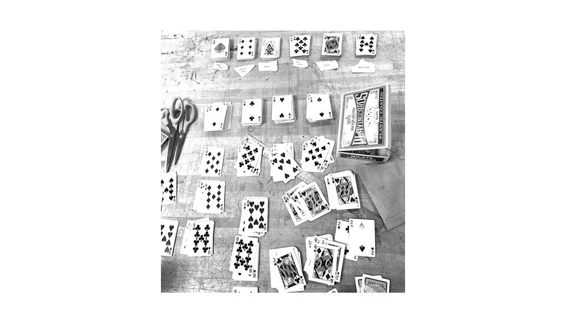
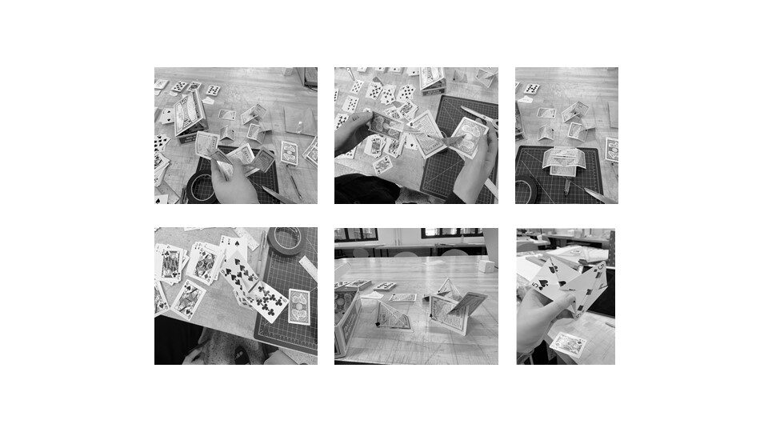
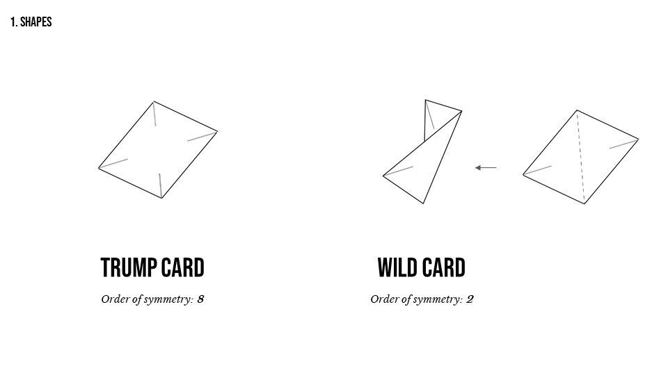
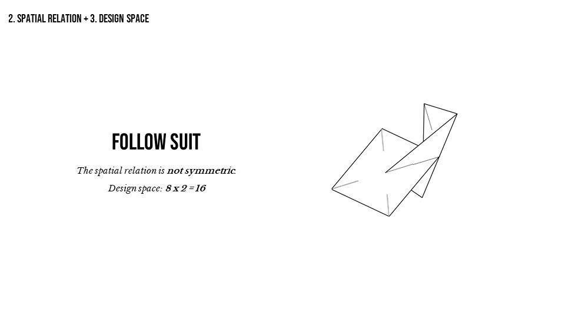
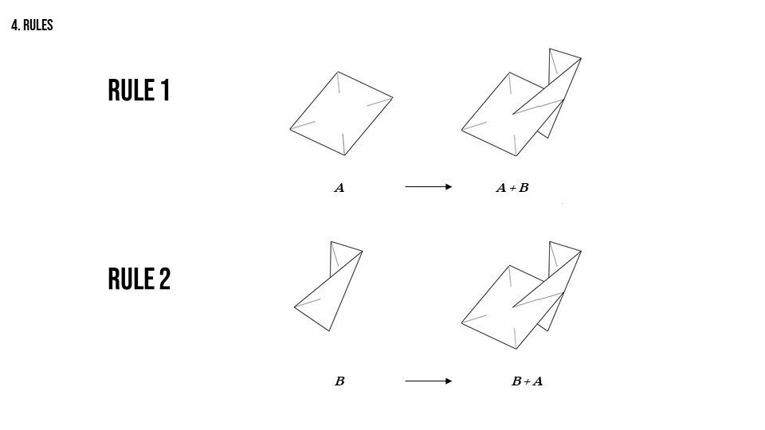
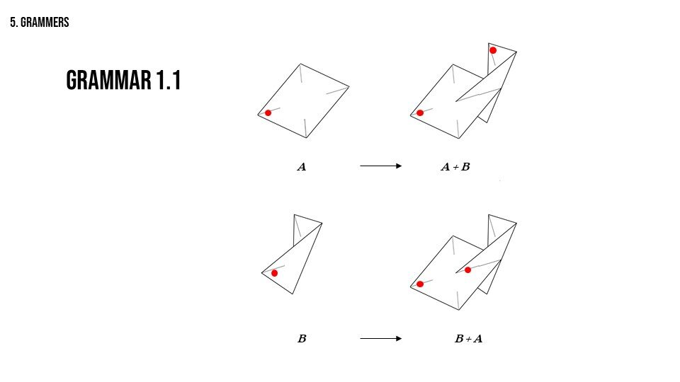
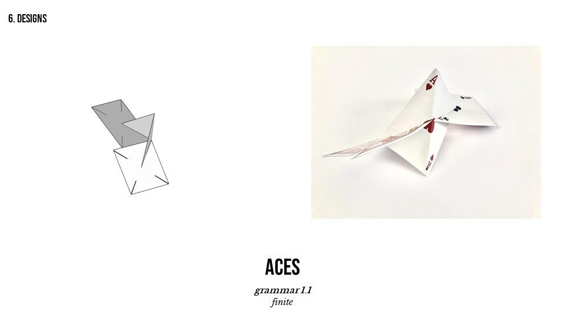
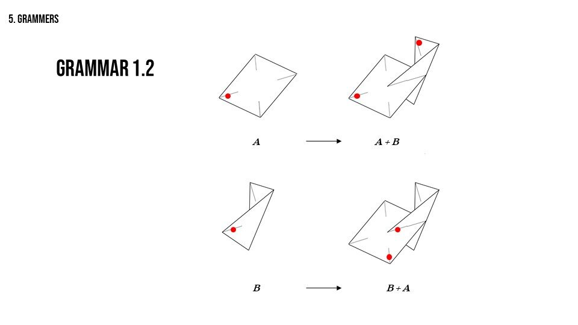
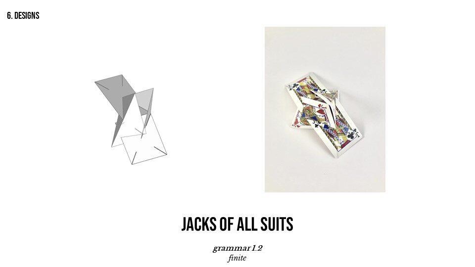
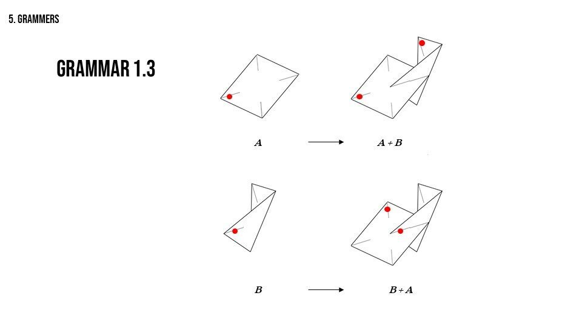
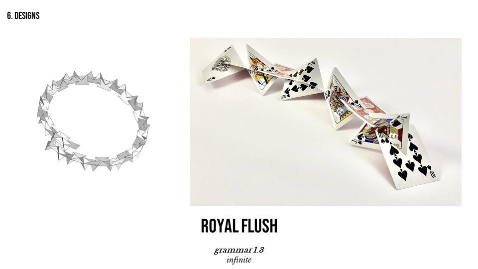
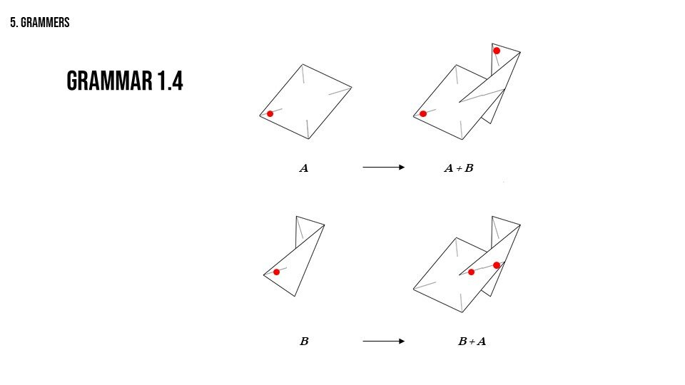
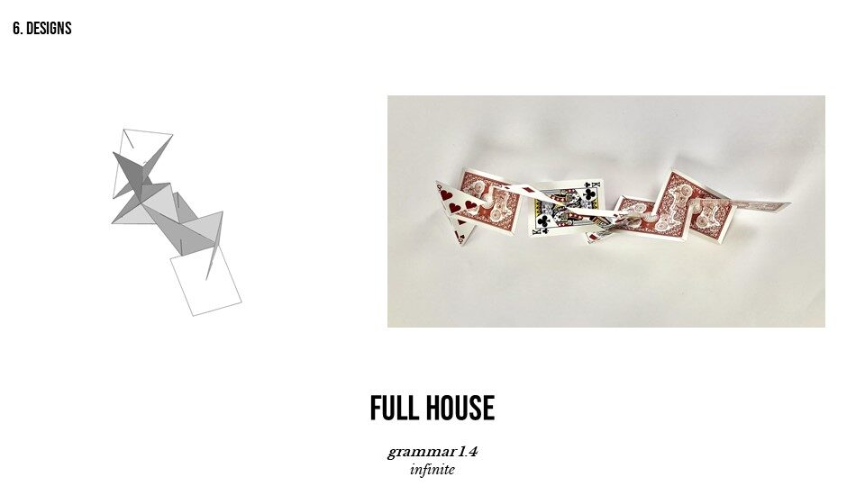
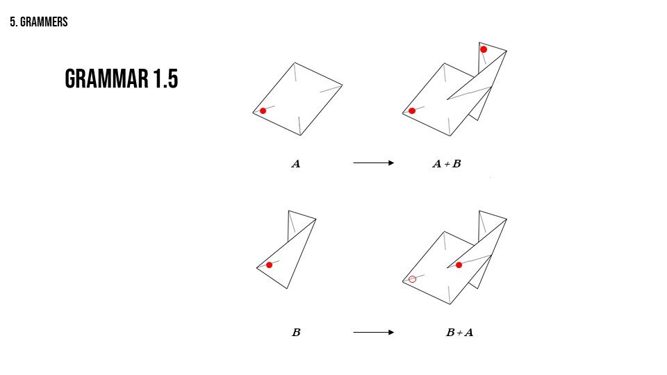
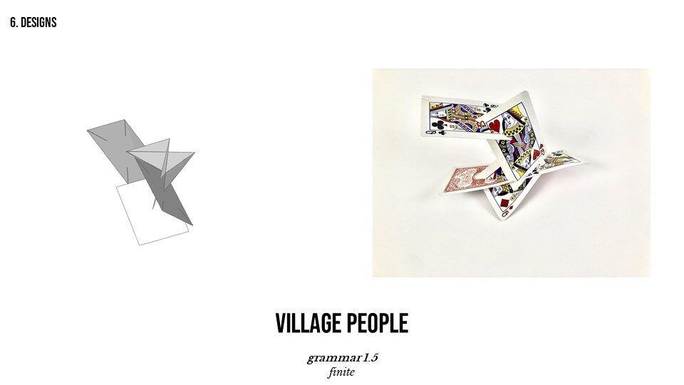
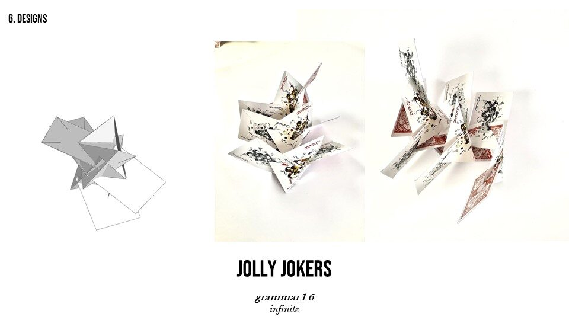